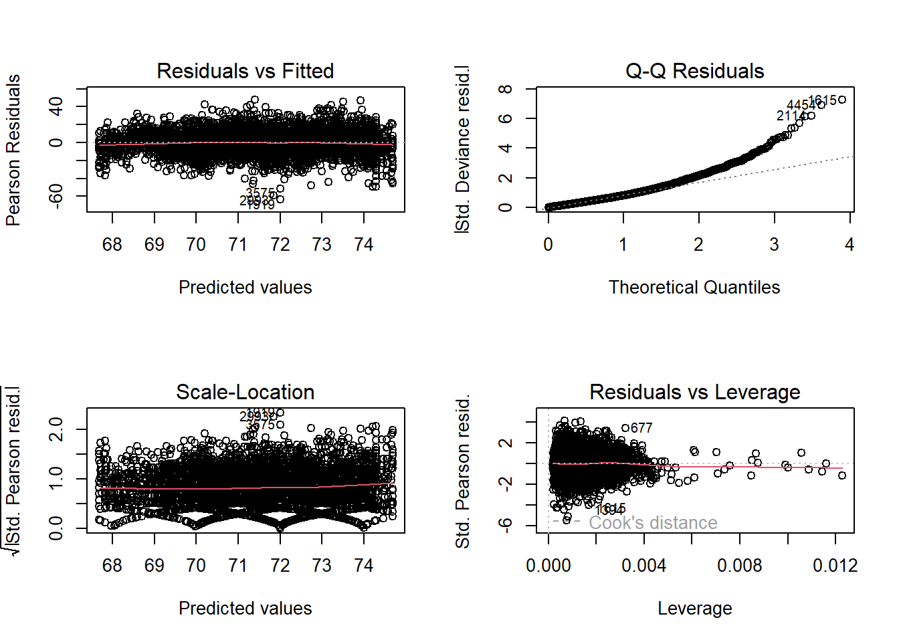

library(tidyverse)
library(scales)
library(janitor)
library(survey)
library(srvyr)
library(gtsummary)10 Case Study: NHANES
This case study follows the tutorial laid out in section 7.5 of Heeringa (2017). It uses the National Health and Nutrition Examination Survey (NHANES) to build a predictive model of diastolic blood pressure (DBP). The NHANES sample is a stratified cluster sample, weighted for unequal probabilities of selection, non-response, and post-stratification.
10.1 Executive summary
- Provide a brief overview of the survey including information related to general study goals and year when annual survey was first implemented.
- Describe the purpose of this document.
- Provide a table of the sample size to be selected per business unit (i.e., respondent sample size inflated for ineligibility and nonresponse).
- Discuss the contents of the remaining section of the report.
10.2 Sample design
Description of the target population.
The target population was adults aged 18 and older residing in the 48 contiguous United States.
Describe the sampling frame including the date and source database.
The sampling frame included households in the 48 contiguous United States. The survey was conducted between February 2001 and April 2003. The source database for the sampling frame was the Inter-university Consortium for Political and Social Research (ICPSR), which provided the necessary geographic and demographic information to ensure a nationally representative sample.
Describe the type of sample and method of sample selection to be used.
The sampling strategy was a multi-stage clustered area probability sample. - Stage 1 was to select primary sampling units. The entire country (48 contiguous states) was divided into primary sampling units (PSUs), composed of counties or groups of contiguous counties. A random sample of PSUs was selected. - Stage 2 was to select segments. The selected PSUs were subdivided into segments, usually census tracts or block groups. A random sample of segments was selected. - Stage 3 was to select households. A random sample of households was selected. - Stage 4 was to select respondents. A person was randomly selected from the household.
10.3 Sample size and allocation
- Optimization requirements – Optimization details including constraints and budget.
– Detail the minimum domain sizes and mechanics used to determine the sizes. - Optimization results
– Results: minimum respondent sample size per stratum
– Marginal sample sizes for key reporting domains
– Estimated precision achieved by optimization results
- Inflation adjustments to allocation solution
– Nonresponse adjustments
– Adjustments for ineligible sample members
- Final sample allocation
– Marginal sample sizes for key reporting domains
- Sensitivity analysis
– Results from comparing deviations to allocation after introducing changes to the optimization system
10.4 Data Preparation
Download 2015SEP2017.zip from the Applied Survey Data Analysis book web site and unzip into the input/ directory of this project repo.
nhanes_raw <- foreign::read.dta("input/nhanes1112_sub_10jun2016.dta")Create labels for factor vars. Heeringa also identifies a data cleaning step, converting 0s to NA.
nhanes <-
nhanes_raw |>
mutate(
bpxdi1_1 = if_else(BPXDI1 == 0, NA_integer_, BPXDI1),
RIDRETH1 = factor(RIDRETH1, labels = c(
"Mexican-American", "Other Hispanic", "Non-Hispanic White",
"Non-Hispanic Black", "Other race")),
riagendr = factor(riagendr, labels = c("Male", "Female")),
marcat = factor(marcat, labels = c(
"Married", "Previously married", "Never married"))
)Create a survey design object for analysis.
nhanes_des <- as_survey_design(
nhanes,
ids = sdmvpsu, # primary sampling unit (cluster)
strata = sdmvstra, # sampling stratum
nest = TRUE, # strata ids are repeated across clusters
weights = WTMEC2YR
)
summary(nhanes_des)Stratified 1 - level Cluster Sampling design (with replacement)
With (31) clusters.
Called via srvyr
Probabilities:
Min. 1st Qu. Median Mean 3rd Qu. Max.
4.493e-06 2.874e-05 5.528e-05 Inf 8.949e-05 Inf
Stratum Sizes:
90 91 92 93 94 95 96 97 98 99 100 101 102 103
obs 862 998 875 602 688 722 676 608 708 682 700 715 624 296
design.PSU 3 3 3 2 2 2 2 2 2 2 2 2 2 2
actual.PSU 3 3 3 2 2 2 2 2 2 2 2 2 2 2
Data variables:
[1] "seqn" "ridstatr" "riagendr" "RIDRETH1" "dmdmartl" "WTINT2YR"
[7] "WTMEC2YR" "sdmvpsu" "sdmvstra" "indfmpir" "BPXSY1" "BPXDI1"
[13] "BPXSY2" "BPXDI2" "BPXSY3" "BPXDI3" "BPXSY4" "BPXDI4"
[19] "bmxbmi" "lbxtc" "age18p" "irregular" "edcat" "age"
[25] "marcat" "pre_hibp" "bp_cat" "ag1829" "ag3044" "ag4559"
[31] "ag60" "mex" "othhis" "white" "black" "other"
[37] "lbdhdd" "lbdhddsi" "lbdtcsi" "bpxdi1_1" 10.5 Descriptive Analysis
Regress the continuous response variable, diastolic blood pressure (bpxdi1_1), on five predictors of interest: race/ethnicity (RIDRETH1), age (agec), gender (riagendr), and marriage status (marcat).
nhanes_des |>
filter(age18p == 1) |>
mutate(agec = scale(age, scale = FALSE)) |>
select(bpxdi1_1, RIDRETH1, agec, riagendr, marcat) |>
tbl_uvregression(
y = bpxdi1_1,
method = survey::svyglm,
label = list(
RIDRETH1 ~ "Race/ethnicity",
agec ~ "Age (cent.)",
riagendr ~ "Gender",
marcat ~ "Marital status"
)
) |>
as_gt() |>
gt::tab_caption(".") |>
gt::tab_header(
title = "Initial Design-Based Bivariate Regression Analysis Results ",
subtitle = "Assessing Potential Predictors of Diastolic Blood Pressure for the 2011–2012 NHANES Adult Sample"
) |>
gt::tab_options(heading.align = "left")| Initial Design-Based Bivariate Regression Analysis Results | ||||
|---|---|---|---|---|
| Assessing Potential Predictors of Diastolic Blood Pressure for the 2011–2012 NHANES Adult Sample | ||||
Characteristic |
N |
Beta |
95% CI 1 |
p-value |
| Race/ethnicity | 212,747,914 | |||
| Mexican-American | — | — | ||
| Other Hispanic | -0.15 | -3.3, 3.0 | >0.9 | |
| Non-Hispanic White | 2.2 | 0.58, 3.8 | 0.011 | |
| Non-Hispanic Black | 2.3 | 0.77, 3.8 | 0.006 | |
| Other race | 1.3 | -0.22, 2.8 | 0.087 | |
| Age (cent.) | 212,747,914 | 0.04 | 0.00, 0.08 | 0.053 |
| Gender | 212,747,914 | |||
| Male | — | — | ||
| Female | -2.2 | -3.4, -1.0 | 0.001 | |
| Marital status | 205,481,294 | |||
| Married | — | — | ||
| Previously married | -0.15 | -1.6, 1.3 | 0.8 | |
| Never married | -1.1 | -2.9, 0.68 | 0.2 | |
| 1
CI = Confidence Interval |
||||
The design-based t-tests suggest that race/ethnicity, age, and gender have potentially significant relationships with DBP, while marital status does not appear to be related. Non-Hispanic whites, non-Hispanic blacks, older adults, and males appear to have the highest DBPs at first glance. Include the first three predictors in an initial model.
10.6 Analysis
Fit a regression model with the variables of interest.
nhanes_fit <-
nhanes_des |>
filter(age18p == 1) |>
mutate(agec = scale(age, scale = FALSE)) %>%
svyglm(
bpxdi1_1 ~ RIDRETH1 + agec + riagendr,
design = .
)
nhanes_fit |>
gtsummary::tbl_regression(
label = list(
RIDRETH1 ~ "Race/ethnicity",
agec ~ "Age (cent.)",
riagendr ~ "Gender"
)
) |>
gtsummary::add_glance_source_note() |>
as_gt() |>
gt::tab_caption(".") |>
gt::tab_header(
title = "Design-Based Estimates of the Regression Parameters in the Initial “Main” Model for Diastolic Blood Pressure",
subtitle = "Linearized Standard Errors for the Estimates, Design-Adjusted Test Statistics and Confidence Intervals for the Parameters, and Design Effects for the Parameter Estimates."
) |>
gt::tab_options(heading.align = "left")| Design-Based Estimates of the Regression Parameters in the Initial “Main” Model for Diastolic Blood Pressure | |||
| Linearized Standard Errors for the Estimates, Design-Adjusted Test Statistics and Confidence Intervals for the Parameters, and Design Effects for the Parameter Estimates. | |||
Characteristic |
Beta |
95% CI |
p-value |
|---|---|---|---|
| Race/ethnicity | |||
| Mexican-American | — | — | |
| Other Hispanic | -0.14 | -3.2, 2.9 | >0.9 |
| Non-Hispanic White | 1.9 | 0.12, 3.7 | 0.038 |
| Non-Hispanic Black | 2.3 | 0.84, 3.8 | 0.005 |
| Other race | 1.3 | -0.29, 2.8 | 0.10 |
| Age (cent.) | 0.04 | -0.01, 0.08 | 0.10 |
| Gender | |||
| Male | — | — | |
| Female | -2.3 | -3.5, -1.1 | 0.002 |
Null deviance = 703,891; Null df = 5,111; AIC = 41,417; BIC = 691,687; Deviance = 691,627; Residual df = 11; No. Obs. = 5,112 |
|||
| 1 CI = Confidence Interval |
|||
The degrees of freedom for the t-statistics are the number of ultimate clusters (31) minus the number of strata (14).
par(mfrow = c(2, 2))
plot(nhanes_fit, labels.id = NULL)
What is the probability of holding each marital status? Calculate the proportion of marcat.
nhanes_des |>
summarize(
.by = marcat,
M = survey_prop()
) |>
adorn_totals(, fill = NA,,, M) |>
gt::gt() |>
gt::fmt_number(M:M_se, decimals = 3)| marcat | M | M_se |
|---|---|---|
| Married | 0.448 | 0.015 |
| Previously married | 0.137 | 0.006 |
| Never married | 0.145 | 0.017 |
| NA | 0.270 | 0.008 |
| Total | 1.000 | NA |
10.6.1 Quantiles
What was the IQR of systolic blood pressure by marital status? Calculate the IQR of BPXSY1.
nhanes_des |>
summarize(
.by = marcat,
Q = survey_quantile(BPXSY1, quantiles = c(.25, .5, .75))
) |>
gt::gt() |>
gt::fmt_number(ends_with("se"), decimals = 2)| marcat | Q_q25 | Q_q50 | Q_q75 | Q_q25_se | Q_q50_se | Q_q75_se |
|---|---|---|---|---|---|---|
| Married | 112 | 122 | 134 | NaN | NaN | NaN |
| Previously married | 114 | 126 | 144 | NaN | NaN | NaN |
| Never married | 110 | 118 | 130 | NaN | NaN | NaN |
| NA | 106 | 120 | NA | NaN | NaN | NaN |
10.6.2 Ratios
Estimate the ratio of high-density total cholesterol.
nhanes_des |>
filter(age >= 18) |>
summarize(
n = survey_total(),
R = survey_ratio(lbdhdd, lbxtc, na.rm = TRUE, vartype = c("se", "ci"))
) |>
gt::gt() |>
gt::fmt_number(everything(), decimals = 3)| n | n_se | R | R_se | R_low | R_upp |
|---|---|---|---|---|---|
| 232,002,539.045 | 14,006,079.200 | 0.272 | 0.003 | 0.266 | 0.278 |